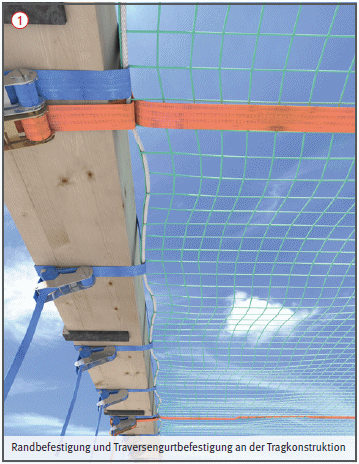
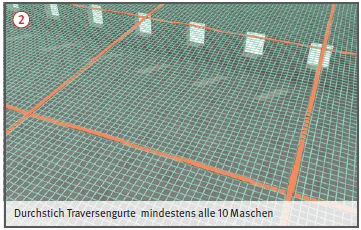

Gefährdungen
- Beschädigte oder mangelhaft
aufgehängte Arbeitsplattformnetze
sowie fehlende Sicherungsmaßnahmen bei der Montage
können Absturzunfälle zur Folge
haben.
- Mangelhafte Absturzsicherungen an absturzgefährdeten Bereichen oder an den Zugängen des Arbeitsplattformnetzes können zu Absturzunfällen führen.
Schutzmaßnahmen
- Nur geprüfte Netze verwenden. Eine Alterungsprüfung ist mindestens alle 12 Monate erforderlich.
- Für die Errichtung ist eine Montageanweisung zu erstellen. Diese ist auf der Baustelle vorzuhalten und zu beachten.
- An absturzgefährdeten Bereichen der Arbeitsplattformnetze sind wirksame Maßnahmen zur Absturzsicherung vorzunehmen.
- Der Arbeitsplatz muss über einen sicheren Zugang erreichbar sein, z. B. Aufzüge, Transportbühnen oder Treppen.
- Nach Fertigstellung des Arbeitsplattformnetzes ist dem Verwender ein Plan für den Gebrauch (Gebrauchsanleitung) zu übergeben. Die darin enthaltenen Hinweise zum bestimmungsgemäßen Gebrauch sind vom Verwender einzuhalten.
- Netze und deren Befestigung arbeitstäglich auf mögliche Beschädigung kontrollieren.
- Arbeitsverfahren einschließlich Arbeitsmittel und verwendete Baustoffe und Bauteile dürfen nicht zu einer Zerstörung des Netzes führen, z. B. schweißen, schneiden, scharfe Kanten.
- Keine eigenmächtigen Veränderungen, wie z. B.: Entfernen von Befestigungen inkl. Anschlaggurten, Traversengurten und Randsicherungen vornehmen.
- Änderungen darf grundsätzlich nur der Monteur (fachkundige Person des Erstellers) der Arbeitsplattformnetze vornehmen.
Zusätzliche Hinweise für das Errichten und Verwenden der Arbeitsplattformnetze
- Bei Arbeitsplattformnetzen darf
- die Maschenweite des Netzes
nicht größer als 45 mm sein,
- die Neigung des eingebauten
Netzes nicht mehr als 22,5°
betragen,
- der maximale Durchhang des
Netzes bei Belastung mit einer
Person an der ungünstigsten
Stelle nicht mehr als 30 cm
betragen (gegebenenfalls sind
die Anschlag- und Traversengurte
nachzuspannen),
- die Befestigung der Arbeitsplattformnetze
an der Tragkonstruktion mit Anschlaggurten im
Abstand von maximal 50 cm
erfolgen
 ,
,
- der Abstand der längs- und
quer aussteifenden Traversengurte
jeweils maximal 2 m
untereinander betragen
 ,
,
- bei dem Gebrauch des Arbeitsplattformnetzes
punktuell eine
maximale Belastung von 6 KN
in die Tragkonstruktion eingeleitet
werden.
- Hinweis: Werden Arbeitsplattformnetze
auch als technische
Schutzmaßnahme gegen den
Absturz von Personen verwendet,
ist beim direkten Aufprall
auf einen Traversengurt mit
höheren Kräften in der Konstruktion
zu rechnen.


Prüfungen
- Prüfung durch eine "zur Prüfung befähigte Person" des Erstellers nach Fertigstellung und vor Übergabe an den Verwender, um den ordnungsgemäßen Zustand festzustellen (Nachweis-Prüfprotokoll).
- Jeder Verwender hat eine Inaugenscheinnahme und erforderlichenfalls eine Funtionskontrolle durch eine fachkundige Person vor der Verwendung auf offensichtliche Mängel durchzuführen (Nachweis-Checkliste).
07/2021